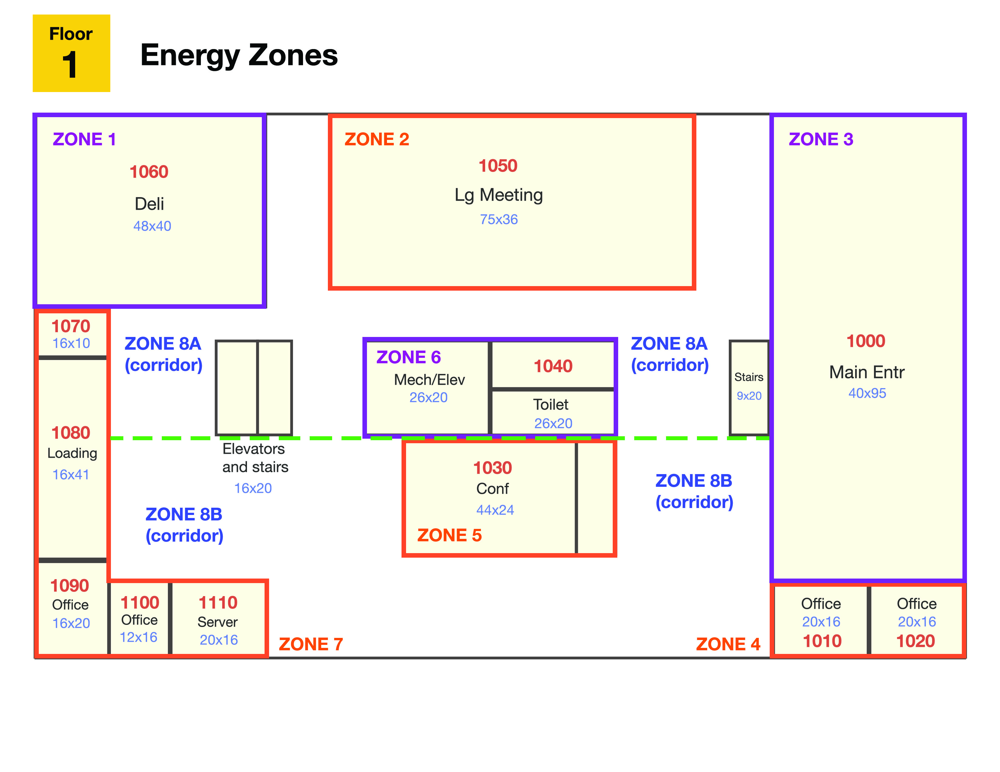
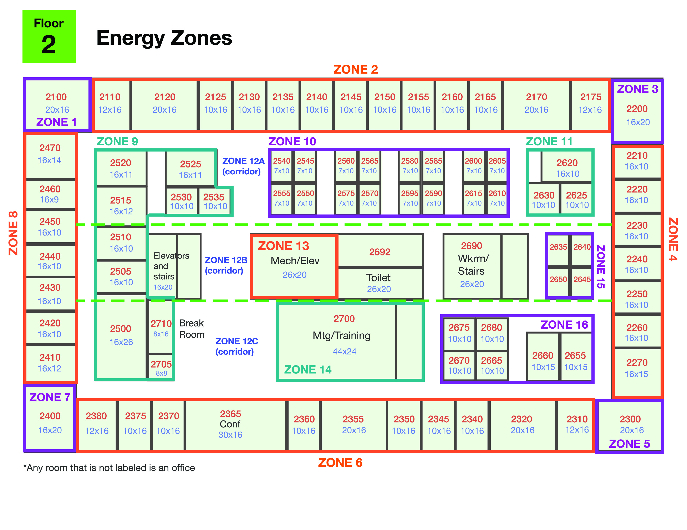
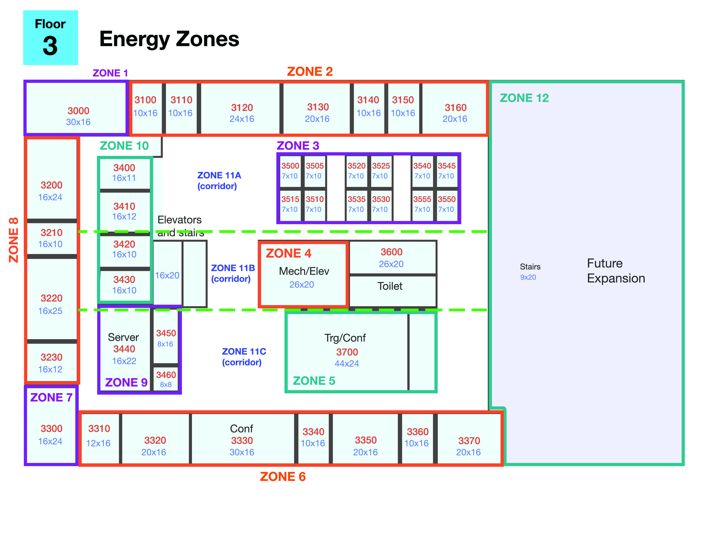

VAST challenge 2016 MC2 Team Lee Shin
Building data line chart
This FloorPlan shows the Zone of each graph entity.



Each graph's data line shows the portion between each Max Min value
All_Hazium Concentration
F1_Light&Equipment Power
F1_TemperatureData
F1_VAV REHEAT Damper Position
F1_REHEAT and VAV Coil Power
F1_Mass Flow Rate
F1_CO2 Concentration
F1_SUPPLY INLET Temperature
F2_Light&Equipment Power
F2_TemperatureData
F2_VAV REHEAT Damper Position
F2_REHEAT and VAV Coil Power
F2_Mass Flow Rate
F2_CO2 Concentration
F2_SUPPLY INLET Temperature
F3_Light&Equipment Power
F3_TemperatureData
F3_VAV REHEAT Damper Position
F3_REHEAT and VAV Coil Power
F3_Mass Flow Rate
F3_CO2 Concentration
F3_SUPPLY INLET Temperature
Each data line shows the portion between each Max Min value